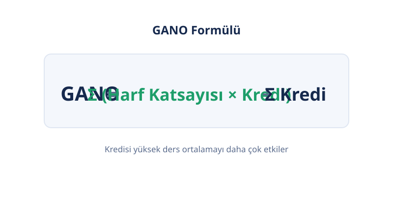
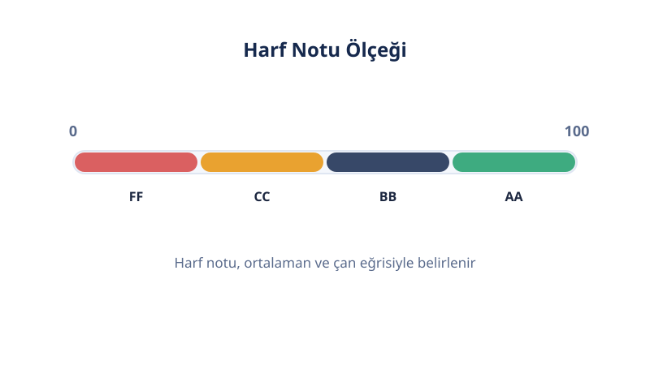

📝 Üniversite Notları
4,00 – 100 Not Dönüşümü
Not dönüşümü, 4,00'lük notunun YÖK'ün resmi tablosundaki 100'lük karşılığını bulmaktır: örneğin 3,50 → 88,33. Notunu yaz, çift yönlü sonucu anında gör.
Son güncelleme: 18 Ekim 2026 · Yazan: PuanRobotu Editör Ekibi
Not Dönüşümü Aracı
İki kutudan birine notunu yaz; diğeri otomatik dolar.
Öne Çıkanlar
- 3,50 (4,00'lük) = 88,33 (100'lük). Dönüşüm YÖK'ün resmi tablosuyla yapılır; "×25" çarpımı yanlıştır.
- Tabloda yazmayan ara değerler (3,55 gibi) iki komşu satır arasında doğrusal enterpolasyonla bulunur.
- (Not−2)×20+60 formülü yanlıştır: 2,00'da 6,67 puan saptırır — aşağıdaki hata tablosuna bak.
- ÖSYM/KPSS başvurularında YÖK tablosu; okul içi işlerde üniversitenin kendi tablosu geçerlidir.
- Tablo 1,00 (30,00) ile 4,00 (100,00) aralığını kapsar; dışındaki değerler çevrilmez.
Not Dönüşümü Nedir?
Not dönüşümü, 4,00'lük sistemdeki bir notun 100'lük sistemdeki resmi karşılığını (veya tersini) YÖK'ün yayımladığı tabloya göre bulma işlemidir. Türkiye'de transkriptler 4,00'lük sistemle tutulur; ama KPSS, ALES ve birçok iş başvurusu 100'lük değer ister.
Dönüşüm doğrusal değildir: 4,00 → 100 iken 2,00 → 53,33'tür ("×25" çarpımı 50 verirdi — yanlış). Bu yüzden ezber formüller değil, resmi tablo kullanılır.
Kilit satırlar: 4,00 → 100,00 · 3,50 → 88,33 · 3,00 → 76,66 · 2,50 → 65,00 · 2,00 → 53,33 · 1,00 → 30,00.
Bu Hesaplayıcı Nasıl Çalışır?
Notunu YÖK tablosundaki satırlarla eşleştirir; birebir karşılık yoksa iki komşu satır arasında doğrusal enterpolasyon yapar. Her iki yön de desteklenir: 4,00 → 100 ve 100 → 4,00.
Enterpolasyonun mantığı: tablo satırları arasındaki artış neredeyse sabittir (0,01 başına ≈ 0,23). Örneğin 3,55, 3,50 (88,33) ile 3,60 (90,66) satırlarının tam ortasıdır → 89,50.
Tablo 1,00 (30,00) ile 4,00 (100,00) aralığını kapsar. Bu aralığın dışındaki değerler için araç sonuç üretmez; uydurma değer vermek yerine tablo dışını açıkça belirtir.
Formül ve Çalışılmış Örnek
GANO'n 3,50 ise KPSS başvurusu için 100'lük karşılığı 88,33'tür.

- Tabloda 3,50 satırı: 88,33 → birebir karşılık.
- Tersi de çalışır: 88,33 yaz → 3,50 bulunur.
- Ara değer: 3,55, 3,50 (88,33) ile 3,60 (90,66) satırlarının tam ortasıdır → 89,50.
Bu örneği yukarıdaki araca girerek doğrulayabilirsin. "3,50 × 25 = 87,5" hesabının 0,83 puan saptığına dikkat et — küçük farklar sıralamada büyük fark yaratır.
Hesaplayıcı Nasıl Kullanılır?
- Yönü seç. 4,00 → 100 veya 100 → 4,00 dönüşüm yönünü belirle.
- Notunu yaz. Ondalık değer girebilirsin (3,55 gibi).
- Sonucu oku. Birebir karşılık veya enterpolasyon sonucu görünür; hangi yöntemin kullanıldığı belirtilir.
- Tablo dışı uyarısına dikkat et. 1,00'ın altı veya 4,00'ın üstü değerlerde araç sonuç üretmez.
Sonucunu Nasıl Okursun?
Sonuç, YÖK tablosundaki resmi karşılıktır; başvuru formuna olduğu gibi yazılır. Üç kritik nokta:
- Yuvarlama: 88,33 ile 88,5 aynı şey değildir. Formda tablodaki değeri aynen kullan; kendi yuvarlamanı yapma.
- Transkript değeri: Bazı okullar transkripte dönüşümü kendisi yazar; öyleyse formdaki değerle çakışmalıdır.
- Ara değer işareti: Enterpolasyonla bulunan sonuçlar tablonun mantığıyla tutarlıdır; ama resmiyette "hesaplanmış değer" olduğunu bil.
Hangi Tablo Sana Uygun? YÖK vs Üniversite Tabloları
Tek "doğru" tablo yoktur; doğru tablo başvurduğun kuruma göre değişir. Hiçbir rakip sayfa bu ayrımı yapmaz.
| Durum | Kullanılacak tablo |
|---|---|
| KPSS, ALES, ÖSYM başvuruları | YÖK tablosu (bu sayfadaki) |
| Yüksek lisans başvurusu (dış üniversite) | YÖK tablosu (ilan başka demedikçe) |
| Kendi üniversitenin iç işlemleri | Üniversitenin senato tablosu |
Farkın büyüklüğüne dikkat: 2,00 YÖK tablosunda 53,33; bazı üniversite tablolarında 62,50 karşılığındadır. Yanlış tabloyla beyan edilen 9 puanlık fark, başvurunu etkiler. İlan metninde "YÖK dönüşüm tablosu" yazıyorsa bu sayfadaki tabloyu kullan.
Yanlış Formül Uyarısı: (Not−2)×20+60
İnternette dolaşan "(4'lük not − 2,00) × 20 + 60" formülü yanlıştır. YÖK tablosuyla karşılaştır:
| 4,00'lük | Formül sonucu | YÖK tablosu | Hata |
|---|---|---|---|
| 2,00 | 60,00 | 53,33 | +6,67 |
| 2,50 | 70,00 | 65,00 | +5,00 |
| 3,00 | 80,00 | 76,66 | +3,34 |
| 3,50 | 90,00 | 88,33 | +1,67 |
| 4,00 | 100,00 | 100,00 | 0 |
Formül yalnızca 4,00'da doğru sonuç verir; 2,00–3,00 bandında 3–7 puan yüksek gösterir. Bu formülü öneren sayfaları görürsen tabloyla karşılaştır. Hiçbir rakip bu hatayı işaretlemez.
Başvuru Senaryoları
Dönüşümün gerçek hayattaki üç kullanımı:
- KPSS başvurusu: Diploma notun 4,00'lükse ÖSYM, YÖK tablosundaki karşılığı ister. GANO 3,20 → yaklaşık 80,66 (enterpolasyonla).
- Yüksek lisans: İlan "lisans mezuniyet notu (100'lük)" istiyorsa dönüşümü bu tabloyla yap; ilan "4,00 üzerinden" istiyorsa dönüştürme.
- İş başvurusu: Form "100 üzerinden not ortalaması" soruyorsa YÖK karşılığını yaz; yanına parantezle 4,00'lük değeri eklemek şeffaflık sağlar.
Sınırlamalar
Bu araç YÖK'ün resmi tablosunu kullanır; ama üç sınırı vardır.
- Tablo dışı: 1,00'ın altı ve 4,00'ın üstü değerler çevrilmez; araç uydurma değer üretmez.
- Üniversite farkı: Bazı üniversiteler kendi dönüşüm tablolarını yayımlar (farklı karşılıklar verebilir). Başvuru yapacağın kurumun hangi tabloyu istediğini teyit et.
- Transkript önceliği: Okulun transkripte dönüşümü kendisi yazdıysa o değer esastır.
YÖK Tablosu vs Üniversite Tabloları
Tablolar birbirini tutmaz; bu yüzden "hangi tablo" sorusu "kaç olur" sorusundan önce gelir.
| 4,00'lük | YÖK tablosu | Örnek üniversite tablosu |
|---|---|---|
| 4,00 | 100,00 | 100,00 |
| 3,00 | 76,66 | 76,66 |
| 2,00 | 53,33 | 62,50 |
Üst bantlarda tablolar yakınsar; fark 2,00 civarında büyür. İlan "YÖK dönüşüm tablosu" diyorsa bu sayfadaki değeri kullan.
İpuçları
- Başvuruda istenen tabloyu teyit et: YÖK tablosu ile üniversitenin kendi tablosu farklı sonuç verebilir.
- Yuvarlama farklarına dikkat: 88,33 ile 88,5 aynı şey değildir; tablodaki resmi değeri kullan.
- Henüz GANO'nu hesaplamadıysan GANO Hesaplama aracıyla 4,00'lük ortalamanı bul, sonra buraya yaz.
- 100'lük notlarının harf karşılıkları için Harf Notu Hesaplama aracına bak.


Sık Sorulan Sorular
4,00'lük not 100'lük sisteme nasıl çevrilir?
YÖK'ün resmi dönüşüm tablosuna göre birebir karşılık bulunur; tabloda olmayan ara değerler doğrusal enterpolasyonla hesaplanır. Örneğin 3,50 → 88,33.
Bu tabloyu kim hazırladı?
YÖK'ün yayımladığı resmi not dönüşüm tablosudur. Bazı üniversiteler kendi tablolarını kullanır; başvuru yapacağın kurumun istediği tabloyu teyit et.
3,55 gibi ara değerler nasıl hesaplanıyor?
Tablonun iki komşu satırı arasında doğrusal enterpolasyon yapılır: 3,55, 3,50 (88,33) ile 3,60 (90,66) satırlarının tam ortasıdır ve 89,50 bulunur.
2,00 kaç puan olur?
YÖK tablosuna göre 2,00 → 53,33. Dikkat: bazı üniversite tablolarında 2,00 → 62,50'dir; başvurunun hangi tabloyu istediğini kontrol et.
(Not−2)×20+60 formülü doğru mu?
Hayır. Bu formül yalnızca 4,00'da doğru sonuç verir; 2,00'da 60 gösterirken resmi karşılık 53,33'tür. 2,00–3,00 bandında 3–7 puan yüksek gösterir; tabloyu kullan.
Hangi başvuruda hangi tablo kullanılır?
KPSS, ALES ve ÖSYM başvurularında YÖK tablosu; kendi üniversitenin iç işlemlerinde üniversitenin senato tablosu geçerlidir. İlan metni 'YÖK dönüşüm tablosu' diyorsa bu sayfadaki tabloyu kullan.
100'lük notu 4,00'e çevirmek neden gerekli?
KPSS, ALES, yüksek lisans ve bazı iş başvuruları 100'lük sistem ister; diploma notun 4,00'lükse bu araçla resmi karşılığını bulursun.
1,00'ın altı neden çevrilmiyor?
YÖK tablosu 1,00 (30,00) ile 4,00 (100,00) aralığını kapsar; bu aralığın dışı tablo dışıdır ve araç uydurma değer üretmez.
Yuvarlama nasıl yapılır?
Tablodaki değeri aynen kullan; kendi yuvarlamanı yapma. 88,33 ile 88,5 aynı şey değildir ve başvuru formunda resmi değer esastır.
Girdiğim not bir yere gönderiliyor mu?
Hayır. Tüm hesaplama tarayıcında yapılır; notun hiçbir sunucuya gönderilmez ve saklanmaz.